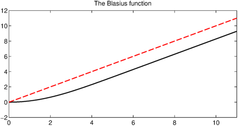

The Blasius function is the unique solution to the boundary value problem
$$ 2u''' + u u'' = 0, \qquad u(0) = u'(0) = 0,\ u'(\infty) = 1 $$
on the domain $x \in [0, \infty)$. The solution is a smooth monotonically increasing function that converges rapidly to a linear polynomial away from the origin.
This problem was first considered by its namesake Heinrich Blasius in 1908 and has received much attention from Weyl, von Neumann, Boyd, and others since. Why? One reason is that it is one of the simplest examples of a nonlinear problem with a boundary layer. Another is that the Blasius function, being smooth and monotonic, seems that it must have a simple analytic representation. Yet over a century of effort has not produced one.
In order to solve the problem in Chebfun we'll need to truncate the domain to something suitable, say $[0, 11]$. We can set up the chebop and solve the differential equation with only a few lines of code.
cheboppref.setDefaults('errTol', 1e-14);
dom = [0, 11];
op = @(u) 2*diff(u,3) + u.*diff(u,2);
bc = @(x,u) [u(0); feval(diff(u),0); feval(diff(u),dom(2))-1];
N = chebop(op, dom, bc);
u = N\0
u =
chebfun column (1 smooth piece)
interval length endpoint values
[ 0, 11] 39 -2.9e-15 9.3
Epslevel = 1.814350e-15. Vscale = 9.279212e+00.
Here is what the solution looks like.
plot(u, 'k-')
title('The Blasius function')
We can check that the residuals are small:
op_residual = norm(op(u)) % Residual of the differential equation bc_residuals = bc(0,u) % Residuals of boundary conditions
op_residual =
2.335038523262293e-09
bc_residuals =
1.0e-11 *
0
0.167404978768104
-0.107736042309625
One quantity of interest is the second derivative of the solution $u$ at the origin. The exact value to sixteen decimal places is supplied by Boyd [1]. Let's test Chebfun's accuracy for this quantity.
a_exact = 0.33205733621519630; a_computed = feval(diff(u,2), 0); a_exact - a_computed
ans =
1.507331481853669e-10
Noticing that the Blasius function approaches a linear polynomial away from the origin, the reader may wonder what is the limiting value $u(x) - x$ as $x \to \infty$? The answer again is supplied to high accuracy by Boyd, so let us see how Chebfun performs.
x = chebfun('x', dom);
hold on, plot(x, 'r--')

b_exact = -1.720787657520503; b_computed = feval(u-x, dom(2)); b_exact - b_computed
ans =
-2.284727962376110e-10
A special property of the Blasius function is that its power series representation only includes every third term, that is,
$$ u(x) = \frac12 \kappa x^2 - \frac1{240} \kappa^2 x^5 + \frac{11}{161280} \kappa^3 x^8 - \cdots, $$
with $\kappa = u''(0)$ is the quantity a_exact above [1]. We can compute these coefficients using the Chebfun command poly. Chebfun's solution is accurate to about eight digits, which is why the other coefficients appear zero only to that many places.
coeffs = poly(u); coeffs(end:-1:end-5)'
ans = -0.000000000000001 0.000000000001673 0.166028668032237 0.000000001557070 -0.000000015982574 -0.000459323884575
The nonzero coefficients in the power series expansion alternate in sign, which suggests that convergence is limited by a singularity on the negative $x$-axis. Indeed this is the case, and the singularity's location is known to be approximately $x_0 = -5.6900380545$. We can see the singularity in Chebfun by extending the domain of the chebop to somewhere near $x_0$, whereupon the boundary conditions at $x=0$ become interior point conditions. (The resulting function is not fully accurate, as Chebfun warns.)
N2 = chebop(op, [-5.6, 11], bc);
v = N2\0
hold off, plot(v, 'k-'), xlim([-5.7 11])
title('A singularity of the Blasius function')
Warning: Newton iteration failed.
Please try supplying a better initial guess via the .init field
of the chebop.
v =
chebfun column (1 smooth piece)
interval length endpoint values
[ -5.6, 11] 511 67 9.3
Epslevel = 1.762239e-15. Vscale = 6.662492e+01.
References
- John P. Boyd, "The Blasius function in the complex plane," Experimental Mathematics, 8 (1999), 381-394.